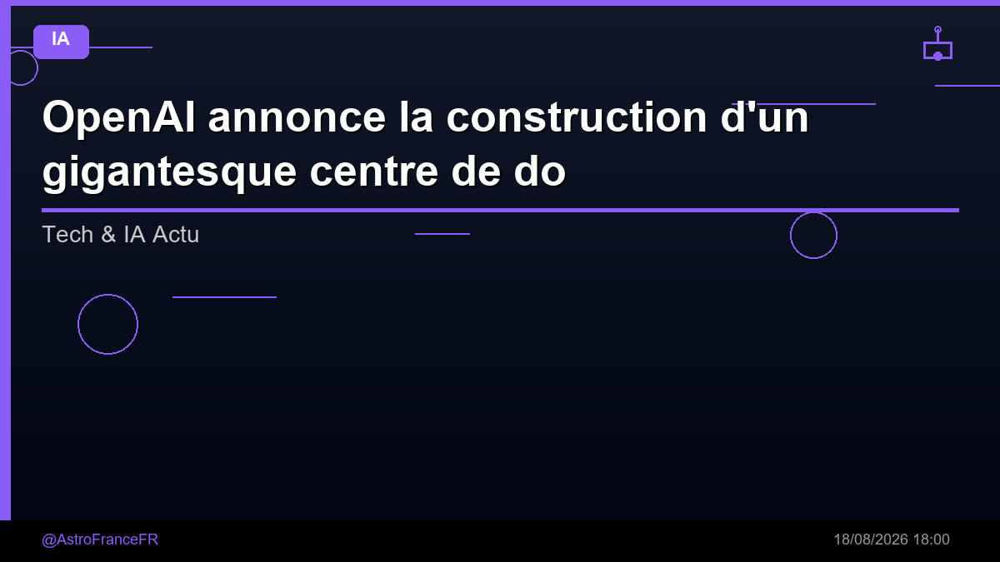

OpenAI annonce la construction d'un gigantesque centre de données d'IA dans l'Ohio, avec une garantie de 105 milliards $ de Nvidia, malgré l'intensification du mouvement de contestation

🛒 En lien avec cet article
🛒 Voir le prix : Carte graphique nvidia rtx
Publicité — Liens de partenariat Amazon : une commission peut être reversée, sans surcoût pour vous.
L'intelligence artificielle continue de transformer en profondeur notre quotidien et l'économie. Cette annonce s'inscrit dans une dynamique où les grands acteurs accélèrent leurs investissements et leurs lancements.
Ce qu'il faut retenir
OpenAI annonce la construction d'un gigantesque centre de données d'IA dans l'Ohio, avec une garantie de 105 milliards $ de Nvidia, malgré l'intensification du mouvement de contestation OpenAI, le créateur de ChatGPT, a annoncé un nouveau centre de données gigantesque aux États-Unis, avec le soutien d'un engagement financier de 105 milliards de dollars de la part de Nvidia.
SB Energy construira, détiendra et exploitera le centre de données dans le cadre d'un bail de 20 ans conclu avec OpenAI, et...
Pourquoi c'est important
Cette information marque une nouvelle étape dans le développement de l'intelligence artificielle. Elle concerne directement les utilisateurs de technologies numériques et mérite d'être suivie de près dans les prochaines semaines. OpenAI annonce la construction d'un gigantesque centre de données d'IA dans l'Ohio, avec une garantie de 105 milliards $ de Nvidia, malgré l'intensification du mouvement de contestation est ainsi un signal à prendre en compte pour comprendre les évolutions du secteur.
En résumé
Retenez l'essentiel : OpenAI annonce la construction d'un gigantesque centre de données d'IA dans l'Ohio, avec une garantie de 105 milliards $ de Nvidia, malgré l'intensification du mouvement de contestation. Cette actualité a été rapportée par Developpez.com. Nous continuerons de suivre ce sujet et de vous tenir informés des prochaines évolutions.
Source : Developpez.com